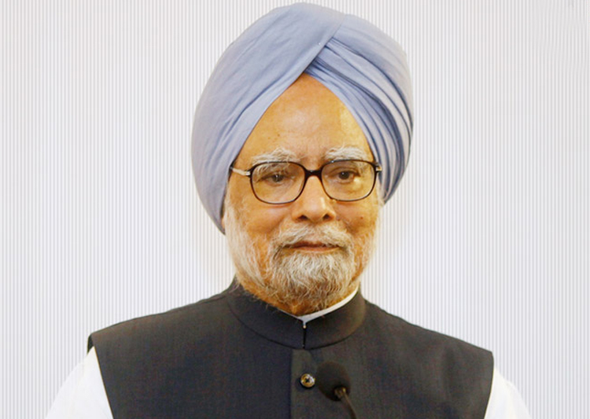
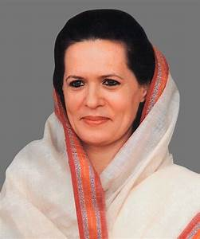
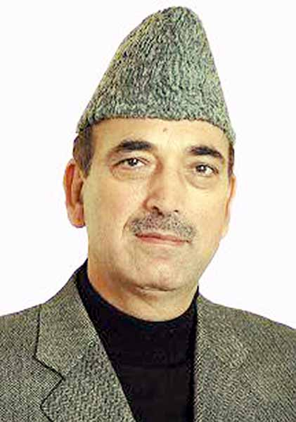

Indian National Congress Party | |
|  | Dr.Manmohan SinghManmohan Singh(born 26 September 1932) is an Indian economist and politician who served as the Prime Minister of India from 2004 to 2014. The first Sikh in office, Singh was also the first prime minister since Jawaharlal Nehru to be re-elected after completing a full five-year term. |
|---|---|
|  | Sonia GandhiSonia Gandhi(born 9 December 1946) is an Indian politician of Italian descent. A member of the Nehru–Gandhi family, she is a former president of the Indian National Congress. Having taken over as the party leader in 1998.Born in a small village near Vicenza, Italy, Gandhi was raised in a Roman Catholic Christian family. After completing her primary education at local schools, she moved to Cambridge for higher education and married Rajiv Gandhi in 1968. |

|
Rahul GandhiRahul Gandhi(born 19 June 1970) is an Indian politician who currently serves as Member of Parliament, Lok Sabha from Amethi, Uttar Pradesh and is also the President of the Indian National Congress.He also currently serves as Member of the Parliamentary Standing Committe. |
|  | Ghulam Nabi AzadGhulam Nabi Azad (born 7 March 1949, in Jammu and Kashmir, India) is an Indian politician of the Indian National Congress and was the Minister of Health and Family Welfare. Presently, he serves as the Leader of opposition in Rajya Sabha. |
Project Developed and Designed
By
Mohandeep Bawa & Paramjeet Kaur Student of Rayat Bahra Campus, Patiala